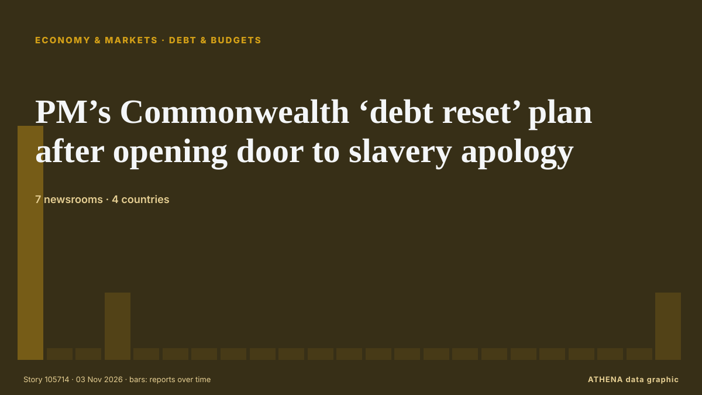

Wirtschaft, Finanzen und Märkte
GesponsertPräsentiert von  Cybernetics and Artificial Intelligence Lab Welcome to the Cybernetics and Artificial Intelligence Laboratory, established at the Department of Business Administration of the National and Kapodistrian University of Athens. The lab is headed by Professor Dimitrios Thomakos. The lab aims to do research that can be published in top venues. Our research uses tools and methods of Artificial Intelligence, and lies in the following areas: - Forecasting - Decision making - Cyber security - Finance We are always looking forward to collaborating with exceptional students!
Cybernetics and Artificial Intelligence Lab Welcome to the Cybernetics and Artificial Intelligence Laboratory, established at the Department of Business Administration of the National and Kapodistrian University of Athens. The lab is headed by Professor Dimitrios Thomakos. The lab aims to do research that can be published in top venues. Our research uses tools and methods of Artificial Intelligence, and lies in the following areas: - Forecasting - Decision making - Cyber security - Finance We are always looking forward to collaborating with exceptional students!
Schlagzeilen werden auf Englisch angezeigt, wie veröffentlicht.
Marktmonitor - amtliche Werte
In welche Richtung sich amtliche Marktkennzahlen bewegen - steigend, fallend oder unverändert - mit dem letzten amtlichen Wert und seinem Datum sowie den von ATHENA bestätigten Marktnachrichten. Amtliche Werte, keine Echtzeitkurse.
Energie
| 1 Tag | 1 Woche | 1 Monat | Amtlicher Wert | |
|---|---|---|---|---|
| Brent crude | ▼ | ▲ | ▲ | $123,10/bblAmtliche Daten vom 27. Okt. 2026 |
| WTI crude | ▼ | ▼ | ▲ | $103,37/bblAmtliche Daten vom 27. Okt. 2026 |
| US natural gas (Henry Hub) | ▲ | ▼ | ▼ | Ungewöhnliche Bewegung $2,76/MMBtuAmtliche Daten vom 27. Okt. 2026 |
| European natural gas (1 Monat · 3 Monate · 12 Monate)(1M · 3M · 12M) | ▲ | ▲ | ▲ | $25,49/MMBtuAmtliche Daten vom 1. Sept. 2026 |
| Coal (Australia) (1 Monat · 3 Monate · 12 Monate)(1M · 3M · 12M) | ▲ | ▲ | ▲ | $153,84/tAmtliche Daten vom 1. Sept. 2026 |
Nahrungsmittel
| 1 Monat | 3 Monate | 12 Monate | Amtlicher Wert | |
|---|---|---|---|---|
| Wheat | ▲ | ▲ | ▲ | $246,85/tAmtliche Daten vom 1. Sept. 2026 |
US-Aktienmärkte
| 1 Tag | 1 Woche | 1 Monat | Amtlicher Wert | |
|---|---|---|---|---|
| S&P 500 | ▼ | ▼ | ▼ | Ungewöhnliche Bewegung Nur Richtung (Index © Cboe)Amtliche Daten vom 30. Okt. 2026 |
| Nasdaq Composite | ▼ | ▼ | ▼ | Nur Richtung (Index © Cboe)Amtliche Daten vom 2. Nov. 2026 |
Zinsen, Risiko und Dollar
| 1 Tag | 1 Woche | 1 Monat | Amtlicher Wert | |
|---|---|---|---|---|
| US 10-year Treasury yield | ▼ | ▼ | ▼ | 4,94 %Amtliche Daten vom 30. Okt. 2026 |
| Market volatility (VIX) | ▲ | ▲ | ▲ | Nur Richtung (Index © Cboe)Amtliche Daten vom 2. Nov. 2026 |
| US dollar, broad index | ▬ | ▲ | ▲ | 121,67Amtliche Daten vom 30. Okt. 2026 |
Der Euro gegenüber anderen Währungen
| 1 Tag | 1 Woche | 1 Monat | Amtlicher Wert | |
|---|---|---|---|---|
| EUR/USD | ▼ | ▲ | ▼ | 1,1179 USDAmtliche Daten vom 3. Nov. 2026 |
| EUR/GBP | ▼ | ▼ | ▼ | 0,8336 GBPAmtliche Daten vom 3. Nov. 2026 |
| EUR/CHF | ▼ | ▼ | ▼ | 0,9166 CHFAmtliche Daten vom 3. Nov. 2026 |
| EUR/JPY | ▬ | ▲ | ▼ | 176,95 JPYAmtliche Daten vom 3. Nov. 2026 |
| EUR/CNY | ▬ | ▲ | ▼ | 7,4590 CNYAmtliche Daten vom 3. Nov. 2026 |
| EUR/TRY | ▼ | ▲ | ▲ | 55,892 TRYAmtliche Daten vom 3. Nov. 2026 |
| EUR/NOK | ▼ | ▼ | ▼ | 10,3185 NOKAmtliche Daten vom 3. Nov. 2026 |
Quellen: US Energy Information Administration (Öl, US-Erdgas), IWF (europäisches Erdgas, Kohle, Weizen), US-Finanzministerium und Federal Reserve (10-jährige Rendite, Dollar-Index) Cboe (VIX), S&P Dow Jones Indices (S&P 500) und Nasdaq (Nasdaq Composite), über FRED (Federal Reserve Bank of St. Louis); Euro-Referenzkurse © Europäische Zentralbank. Die Werte sind die letzten amtlichen Zahlen mit Datum, keine Echtzeitkurse. Die Richtungen berechnet ATHENA.
Krypto, ETFs und Aktien in den Nachrichten
- Binance customers pull $4.72 billion after record crypto hack Risiko 4.2 3. Nov.
- Greenback pulls back ahead of US midterms; Bitcoin stabilises after crypto heist Risiko 1.6 3. Nov.
- US stocks recover some of last week's sell-off after oil prices fall sharply Risiko 4.8 3. Nov.
- Russian stock market in the green in early trading hours Risiko 0.0 3. Nov.
- Mercado Bitcoin, Brazil’s largest crypto exchange, hit by $46 million security breach Risiko 3.1 3. Nov.
- Apple earnings beat fails to impress Wall Street as tech shares struggle ahead of US midterms Risiko 0.0 3. Nov.
- Only 12 stocks rise as Turkish exchange sheds $128B in fund scandal fallout Risiko 3.4 3. Nov.
- US stocks: S&P 500 ends down; Apple dips ahead of quarterly report Risiko 0.0 3. Nov.
- Apple shares slide as higher memory costs fuel margin concerns Risiko 1.4 3. Nov.
- Cinemark Stock Pops On Record Q3 Revenue Risiko 0.0 3. Nov.

Schulden und HaushaltePM’s Commonwealth ‘debt reset’ plan after opening door to slavery apology
The Prime Minister will argue work to support member states amid rising global interest rate costs must include non-G7 donors and the private sector. von The Irish News (Belfast)
| 21. Okt. | 34 |
|---|---|
| 22. Okt. | 82 |
| 23. Okt. | 61 |
| 24. Okt. | 28 |
| 25. Okt. | 29 |
| 26. Okt. | 119 |
| 27. Okt. | 131 |
| 28. Okt. | 128 |
| 29. Okt. | 105 |
| 30. Okt. | 115 |
| 31. Okt. | 27 |
| 1. Nov. | 67 |
| 2. Nov. | 120 |
| 3. Nov. | 54 |
Disney plans thousands of layoffs as managers asked to cut costs by 20%
California: Walt Disney is considering cutting thousands of jobs as the entertainment giant seeks to reduce costs, with some managers asked to identify annual savings of 20 per cent, Bloomberg… von Gulf News
Virgin Media O2 cutting thousands of jobs in cost savings overhaul
The bulk of the savings – about £300 million – will come from job cuts among its 16,000-strong UK workforce. von Evening Standard (London)
Proposition 40: How California could become the first US state to tax Billionaires' wealth
Proposition 40 would impose a one-time 5 per cent tax on Californians with net worths exceeding $1 billion. von The Independent
Israel orders seizure of over 26,000m² of Palestinian land in occupied West Bank
The military order covers land in three villages northwest of Ramallah for a route intended to connect more illegal Israeli settlements, a Palestinian commission says. von TRT World
Bangladesh Garment Workers Stage Fourth Day of Wage Protests
Clashes were reported across industrial belts around Dhaka, including Ashulia, Gazipur and the capital's Mirpur area, as workers staged fresh demonstrations and attempted to block major highways. von CNA (Channel NewsAsia)
Apple shares slide as higher memory costs fuel margin concerns
Apple forecasts December-quarter gross margins of 45%-46%, including costs of upgrading its AI-powered Siri. von Express Tribune
Installation Featuring Names of Children Killed in Gaza Refused Display by Local Australian Council
The council told the organisers to look into hiring “armed guards” in case “community conflict” arises. von ARTnews
Stolen watch worth US$290,000 returned to Japan store with sorry note
The theft occurred when a man posing as a customer tried on the Audemars Piguet timepiece and then fled the shop while it was still on his wrist. von Free Malaysia Today
The midterms and the world
A Democratic sweep of both houses of Congress would see big changes on energy and trade in particular. von Financial Times - Global economy
Jack Lowden speaks out over James Bond rumours as speculation soars over future 007
The Slow Horses actor is one of the rising stars of his generation - could he be the next 007? von Evening Standard (London)
'Fuel of the poor' LPG soars in Pakistan, forcing rickshaw drivers to cut meals
LAHORE: For 13 years, Rashid Ali has driven a three-wheeled motorised rickshaw around Lahore in eastern Pakistan. von Business Recorder
Australia hikes rates to 18-year high to fight inflation
The Reserve Bank of Australia's decision was in line with expectations from economists polled by Reuters, and marked its fifth rate increase this year. von CNBC World
Larry Ellison’s Net Worth Falls $11 Billion As Oracle Shares Plummet To Four-Month Low
Oracle submitted filings Monday revealing the company is selling $20 billion of debt and equity to raise money for its artificial intelligence investments. von Forbes Business
Hong Kong Q3 GDP expands by 5.2% year-on-year, outlook positive
Hong Kong’s economy grew by 5.2 per cent year on year in the third quarter, marking its 15th consecutive quarter of expansion, while retail sales rose by 6.4 per cent in September. von South China Morning Post
Australia name white-ball squads for England series
Host of fresh faces are included for the series. von Express Tribune
An unusual sexual bond between a bull and a male donkey
Sex between animals of the same sex is widespread in nature. von Phys.org
Gold rebounds from one-year low near $3,900
Shafaq News Gold prices bounced on Monday, after a selloff in the previous session, as weaker oil prices tempered inflation concerns, while investors assessed comments from the Federal Reserve for… von Shafaq News (English)
S&P cuts Meta’s outlook to negative
Meta has been given a negative outlook by S&P Global Ratings due to the company's hefty capital expenditures and concerns about free cash flow. von CNBC World
Billionaire tax divides California Democrats, draws myriad questions
California voters this midterm cycle will decide whether the state will impose a wealth tax on billionaire residents, as wealthy Californians organize against the measure and experts say its… von The Hill
Owner of Serbia's Delicenced ALTA Banka Gets Arrested
The Executive Board of the National Bank of Serbia has officially revoked the operating licence of Alta Banka a.d. von N1 Serbia (English)
Palantir reports booming U.S. commercial revenue growth, topping government for first time
Palantir's commercial revenue jumped 148% to $984 million, surpassing government revenue of $953 million. von CNBC World
US ISM Manufacturing PMI improces to 55.5 in October vs. 54.6 expected
Business activity in the United States (US) manufacturing sector expanded at an accelerating pace in October, with the Institute for Supply Management's Manufacturing Purchasing Managers' Index (PMI)… von FXStreet
Warren Buffett, 96, has ‘not had water in 48 years’: ‘No thank you. I’ll have a…’
Jeff Bezos shared insights on investing in artificial intelligence stocks while discussing broader market trends. von Times of India
Cracks In Turkey-Azerbaijan Ties: Israel And Aliyev’s Absence
Behind the specific disagreements, a broader geopolitical issue may be at play, as Ankara and Baku diverge on Iran, Israel and Armenia. von to vima
Prime Minister Muhammad Shehbaz Sharif chairing a review meeting regarding Access to Finance for SME, Housing and Agriculture sectors.
Jordan's king says 'no security or stability' in region without Palestinian homelan
Jordan’s King Abdullah II on Monday said there would be no security in the Middle East region until the Palestinians’ right to a homeland is fulfilled. von Hespress English
Bank of England poised to raise rates but may push back on bets for more
Economists polled expect it to raise the bank rate to 4% from 3.75%. von The Business Times
Anthropic plans to sell $3.5 billion of shares to Japan investors in IPO, filing shows
This will go towards raising working capital and funding operating expenses and capital expenditure. von The Business Times
Greece weather alert: Storm Agneta brings red warnings for Corfu, Paxos and Epirus
Greece's meteorological service has upgraded its severe weather warning, with heavy rain, thunderstorms, hail and frequent lightning expected across several regions until Tuesday. von ProtoThema English
Scam centres relocated from Cambodia raided in Madagascar
Raids against online scam centres in Madagascar have exposed ties with a criminal group that ran similar operations in Cambodia, also duping African nationals via human trafficking, authorities say. von Bangkok Post
Israeli forces fire tear gas at Palestinian students, teachers in West Bank as occupiers block roads
Israeli army, occupiers carry out 3,133 attacks last month in 52.8% increase from previous month, commission says. von Express Tribune
Australian home prices fall for seventh month
The heightened risk of another imminent rate hike adds to more pain. von The Business Times
ECB keeps rates on hold as Christine Lagarde announced her resignation
The deposit rate will be left at 2.5% on Thursday, analysts say. von Luxembourg Times